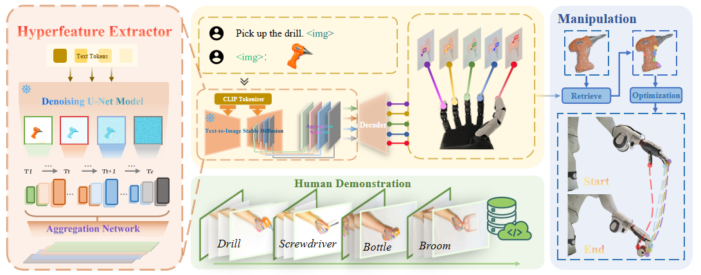

Abstract
Dexterous grasp synthesis remains a central challenge: the high dimensionality and kinematic diversity of multi-fingered hands prevent direct transfer of algorithms developed for parallel-jaw grippers. Existing approaches typically depend on large, hardware-specific grasp datasets collected in simulation or through costly real-world trials, hindering scalability as new dexterous hand designs emerge. To this end, we propose a data-efficient framework, which is designed to bypass robot grasp data collection by exploiting the rich, object-centric semantic priors latent in pretrained generative diffusion models. Temporally aligned and fine-grained grasp affordances are extracted from raw human video demonstrations and fused with 3D scene geometry from depth images to infer semantically grounded contact contact targets. A kinematics-aware retargeting module then maps these affordance representations to diverse dexterous hands without per-hand retraining. The resulting system produces stable, functionally appropriate multi-contact grasps with a 90\% real-world success rate, while exhibiting strong generalization across previously unseen object instances within a category, pose variations, and multiple hand embodiments. This work (i) introduces a semantic affordance extraction pipeline leveraging vision–language generative priors for dexterous grasping, (ii) demonstrates cross-hand generalization without constructing hardware-specific grasp datasets, and (iii) establishes that a single depth modality suffices for high-performance grasp synthesis when coupled with foundation-model semantics. Our results highlight a path toward scalable, hardware-agnostic dexterous manipulation driven by human demonstrations and pretrained generative models.
Overview of FSAG
(1) Hyperfeature extraction: A frozen text-to-image diffusion U-Net encodes the object image (optionally text-conditioned; multi-timestep, multi-scale activations are aggregated into hyperfeatures $A_g$. (2) Finger-specific affordance grounding: An FPN-style decoder maps $A_g$ to five per-finger likelihood maps $\hat{H}$ supervised by fingertip labels from human demonstrations. (3) Manipulation: Stereo-depth reconstruction and language-guided segmentation yield a partial object point cloud; maxima of $\hat{H}$ are lifted to 3D, local normals define approach/closure/hold waypoints, and a damped least-squares QP tracks them under joint and collision constraints to execute dexterous grasps transferable across hand embodiments.